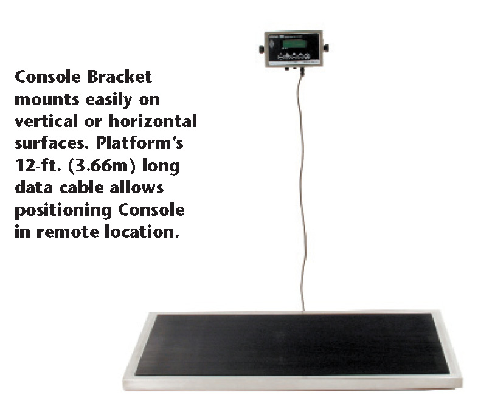

Electric Scales
Regal 300
 Precision Regal 300 display console can measure weights in pounds or kilograms with the push of a button, has a 300 lb. (136 kg) capacity. The easy-to-read LCD screen displays weights to the nearest 0.1 lbs. or 0.1 kg. with ±1% accuracy. The scale is touch-activated with autoshut-off. The mounting bracket allows the console to be mounted to a horizontal or vertical surface and tilted to make LCD Screen easier to see.
A reinforced, 1-piece, fully-welded stainless steel-covered frame creates the strongest, most rigid platform scale available.
Stainless Steel motionless platform is supported by a load cell in each corner, with self-aligning floor pads to insure accuracy on most floors. State-of-the-art electronics take load readings from all four corner-mounted load cells to get the most accurate weight even if the animal is placed off center. Platform’s 12-ft. (3.66m) long datacable plugs into the console. Many less expensive scales take readings from only one or two load cells and the platform is not motionless.
Hold button on the console allows you to lock in an electronically-averaged weight for restless animals to keep the reading from “jumping around.” The Regal 300 also features a Tare function to compensate for the extraweight when an animal is weighed inside a carrier or held by its owner.
The Regal 300 Scale is truly portable while operating with its’ built-in 6-v. rechargeable battery or it can be continuously powered by leaving the battery’s charger plugged in.
Non-slip rubber mat gives anxious animals better traction, and removes easily for cleaning. Display console may be mounted on the optional mounting column, on a wall or cabinet above the scale, or in a remote location. A 12-foot (3.66m) long cable is included.